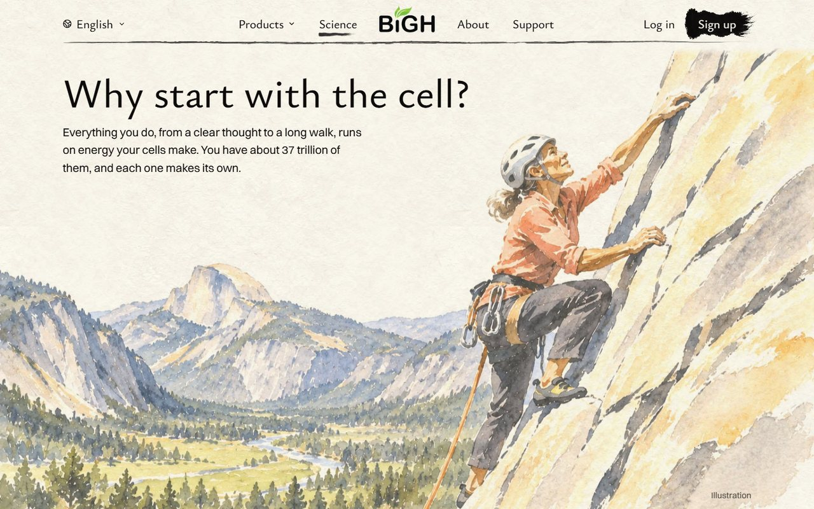
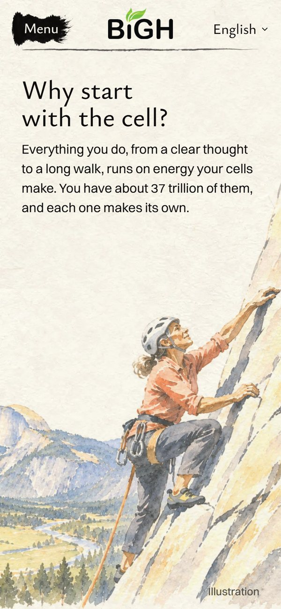
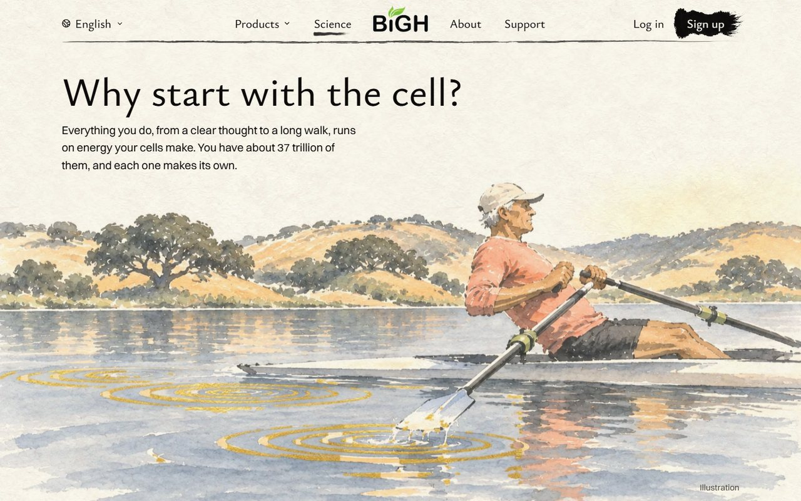
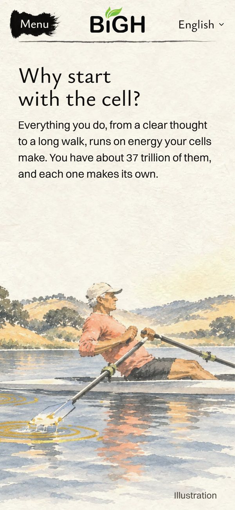
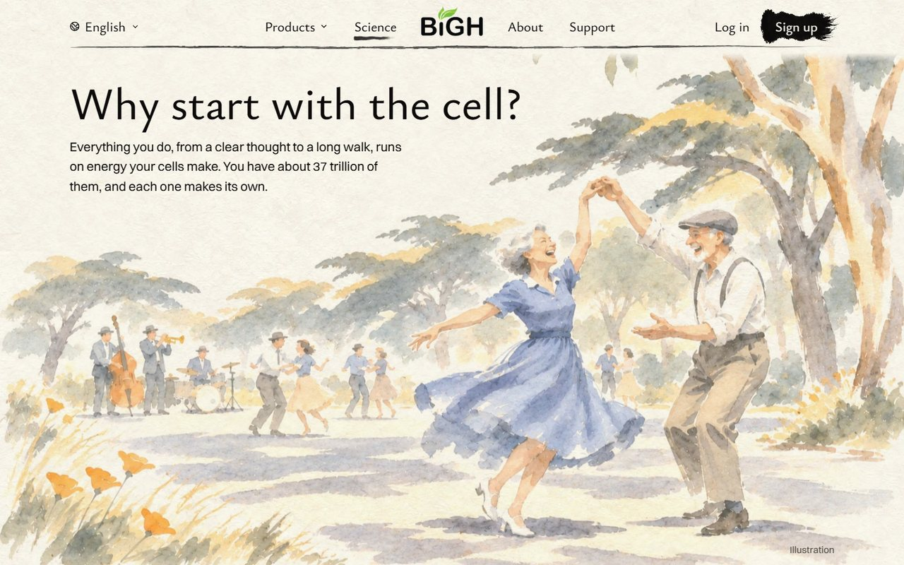
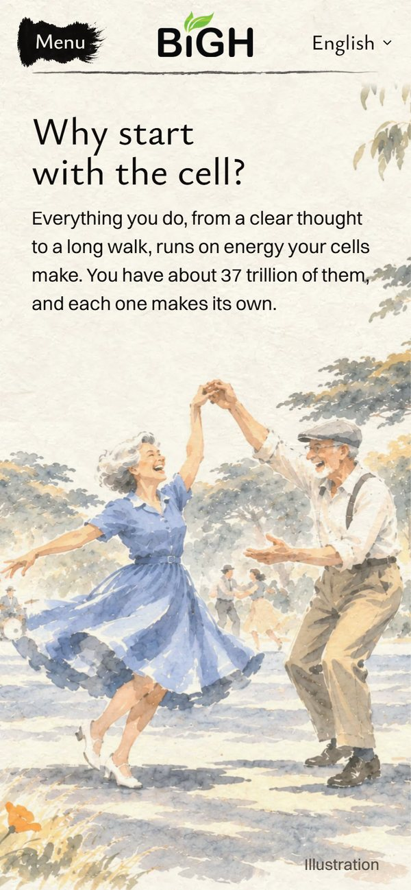
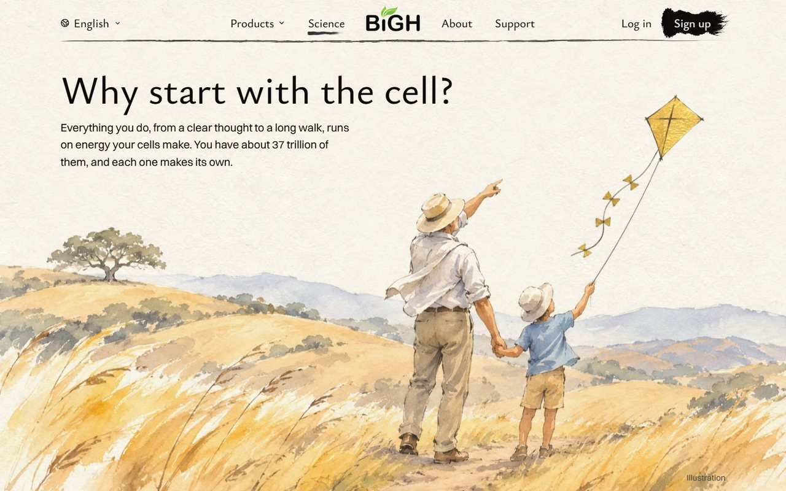
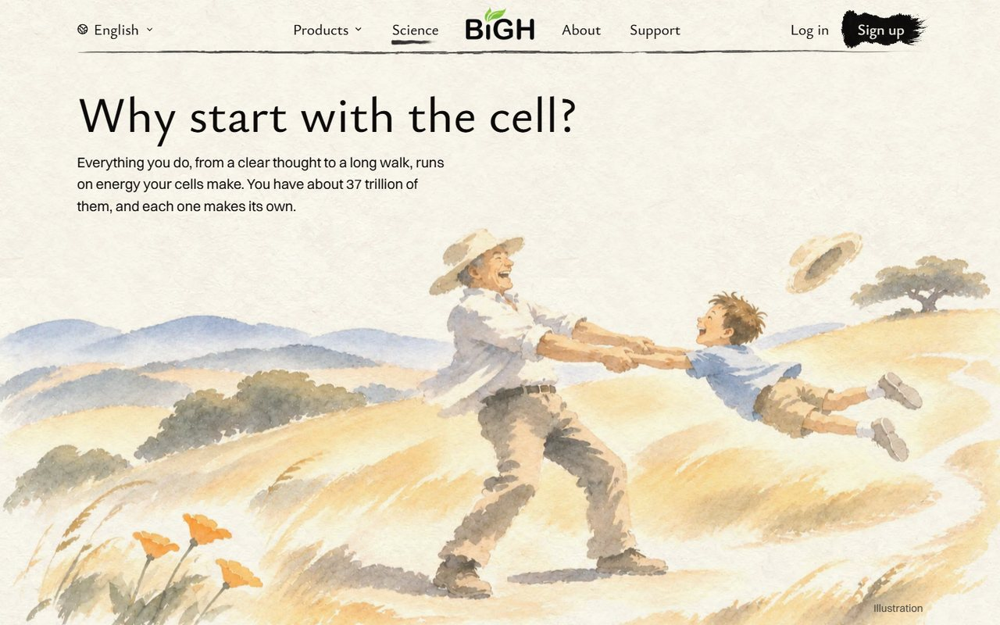
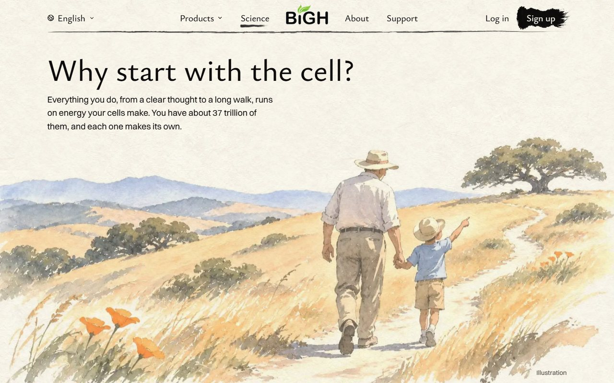

<title>Science Last Picture</title>
<meta name="claude:viewport-fit-sides" content="cover">
<link rel="preconnect" href="https://fonts.googleapis.com">
<link rel="preconnect" href="https://fonts.gstatic.com" crossorigin>
<link rel="stylesheet" href="https://fonts.googleapis.com/css2?family=Ysabeau:wght@400;500;600&family=Inter:wght@400;500;600&display=swap">
<style>
  /* Layout: one column of choices, each a painted page shown at desktop and phone size, side by side when there is room; earlier pictures as a small row at the end. */
  :root {
    --paper: #f6f2ea;
    --card: #fbf8f2;
    --ink: #1f1c18;
    --ink-soft: #5d564c;
    --rule: #ddd4c4;
    --gold: #a77a1c;
    --display: "Ysabeau", "Iowan Old Style", Georgia, serif;
    --text: "Inter", system-ui, -apple-system, "Segoe UI", sans-serif;
  }
  @media (prefers-color-scheme: dark) {
    :root:not([data-theme="light"]) {
      --paper: #191714; --card: #221f1b; --ink: #f1ece2; --ink-soft: #b5ab9b; --rule: #3a342c; --gold: #d8ad55;
      color-scheme: dark;
    }
  }
  :root[data-theme="dark"] {
    --paper: #191714; --card: #221f1b; --ink: #f1ece2; --ink-soft: #b5ab9b; --rule: #3a342c; --gold: #d8ad55;
    color-scheme: dark;
  }
  body {
    background: var(--paper);
    color: var(--ink);
    font: 400 1.0625rem/1.55 var(--text);
    padding-left: max(16px, env(safe-area-inset-left, 0px));
    padding-right: max(16px, env(safe-area-inset-right, 0px));
    padding-block: 28px 56px;
  }
  main { max-width: 1120px; margin: 0 auto; display: grid; gap: 44px; }
  h1, h2, h3 { font-family: var(--display); font-weight: 500; text-wrap: balance; margin: 0; line-height: 1.12; }
  h1 { font-size: clamp(2rem, 5vw, 3rem); }
  h2 { font-size: clamp(1.6rem, 3.6vw, 2.2rem); }
  h3 { font-size: 1.25rem; }
  p { margin: 0; max-width: 62ch; }
  header { display: grid; gap: 12px; }
  .lede { font-size: 1.15rem; }
  .soft { color: var(--ink-soft); }
  section { display: grid; gap: 16px; padding-top: 28px; border-top: 1px solid var(--rule); }
  .head { display: flex; flex-wrap: wrap; align-items: baseline; gap: 6px 14px; }
  .tag { font: 600 0.8rem/1 var(--text); letter-spacing: 0.06em; text-transform: uppercase; color: var(--gold); }
  .score { font: 500 0.95rem/1 var(--text); color: var(--ink-soft); font-variant-numeric: tabular-nums; }
  ul { margin: 0; padding-left: 1.2em; display: grid; gap: 4px; max-width: 64ch; }
  .shots { display: grid; grid-template-columns: minmax(0, 3.2fr) minmax(0, 1fr); gap: 14px; align-items: start; }
  .mini { display: grid; grid-template-columns: repeat(3, minmax(0, 1fr)); gap: 14px; align-items: start; }
  figure { margin: 0; display: grid; gap: 6px; min-width: 0; }
  figure img, figure video { display: block; width: 100%; max-width: 100%; height: auto; border-radius: 6px; border: 1px solid var(--rule); background: var(--card); }
  figcaption { font-size: 0.85rem; color: var(--ink-soft); }
  .ask { display: grid; gap: 8px; padding: 18px 20px; background: var(--card); border: 1px solid var(--rule); border-radius: 8px; }
  .ask strong { font-family: var(--display); font-size: 1.35rem; font-weight: 600; }
  @media (max-width: 720px) {
    .shots { grid-template-columns: minmax(0, 1fr); }
    .shots figure.phone { max-width: 320px; }
    .mini { grid-template-columns: minmax(0, 1fr); }
  }
  .still-if-reduced { display: none; }
  @media (prefers-reduced-motion: reduce) { video { display: none; } .still-if-reduced { display: block; } }
</style>

<main>
  <header>
    <h1>The last picture of the Science zoom</h1>
    <p class="lede">Round 2, anything goes. Three new ideas, each a different kind of energy.</p>
    <p class="soft">Each is shown in the real page, desktop and phone. The scroll still goes cell, then a hand, then this picture. For the one you pick, I repaint the hand close-up to match: the climber's hand on the rock, the rower's hand on the oar, or the dancers' joined hands.</p>
  </header>

  <section aria-labelledby="a-title">
    <div class="head"><span class="tag">A · my pick</span><h2 id="a-title">The climber</h2><span class="score">8.5 / 10</span></div>
    <ul>
      <li>A woman in her sixties climbs sunny granite, high above Yosemite Valley. Half Dome stands across the valley.</li>
      <li>Effort and focus: "a clear thought" and energy in one picture. It says California at once.</li>
      <li>The best tie to the scroll: you pull back from a cell, to her hand on the rock, to the whole climb.</li>
      <li>Still holding it back: no gold and nothing moving. Some older visitors may think "I could never do that".</li>
    </ul>
    <div class="shots">
      <figure>
        
        <figcaption>Desktop</figcaption>
      </figure>
      <figure class="phone">
        
        <figcaption>Phone</figcaption>
      </figure>
    </div>
  </section>

  <section aria-labelledby="b-title">
    <div class="head"><span class="tag">B</span><h2 id="b-title">The rower at sunrise</h2><span class="score">8 / 10</span></div>
    <ul>
      <li>An older man rows on a still lake among golden hills with oaks.</li>
      <li>The ripples round his oar are real gold leaf: quiet, steady energy. When built, they could widen slowly.</li>
      <li>Calm, like the rest of the site, and very much a painting.</li>
      <li>Still holding it back: a few old ripples sit in front of the boat, where real rowing would leave them behind. I'd fix that.</li>
    </ul>
    <div class="shots">
      <figure>
        
        <figcaption>Desktop</figcaption>
      </figure>
      <figure class="phone">
        
        <figcaption>Phone</figcaption>
      </figure>
    </div>
  </section>

  <section aria-labelledby="c-title">
    <div class="head"><span class="tag">C</span><h2 id="c-title">Sunday swing dancing</h2><span class="score">8 / 10</span></div>
    <ul>
      <li>An older couple swing-dance in Golden Gate Park. She spins under his hand, both laughing. A small band plays behind.</li>
      <li>Joy, music and being together. The warmest of the three.</li>
      <li>Still holding it back: the faces are a little storybook, and there is no gold.</li>
    </ul>
    <div class="shots">
      <figure>
        
        <figcaption>Desktop</figcaption>
      </figure>
      <figure class="phone">
        
        <figcaption>Phone</figcaption>
      </figure>
    </div>
  </section>

  <section aria-labelledby="r1-title">
    <div class="head"><span class="tag">For comparison</span><h2 id="r1-title">Round 1, and today</h2></div>
    <div class="mini">
      <figure>
        <video src="kite-desk.mp4" poster="kite-desk-poster.jpg" autoplay muted loop playsinline aria-label="The gold kite, swaying"></video>
        
        <figcaption><strong>Kite</strong> (round 1): the pair with a gold-leaf kite that sways.</figcaption>
      </figure>
      <figure>
        
        <figcaption><strong>Swing</strong> (round 1): Grandpa swings the child round.</figcaption>
      </figure>
      <figure>
        
        <figcaption><strong>Today</strong>: the pair walking away.</figcaption>
      </figure>
    </div>
  </section>

  <div class="ask">
    <strong>Which one: A, B or C?</strong>
    <p class="soft">Or Kite or Swing from round 1, or something else. Tried and left out: Grandma's cannonball at Lake Tahoe (she looked cartoonish) and wind turbines (they looked like an energy-company ad).</p>
  </div>
</main>
